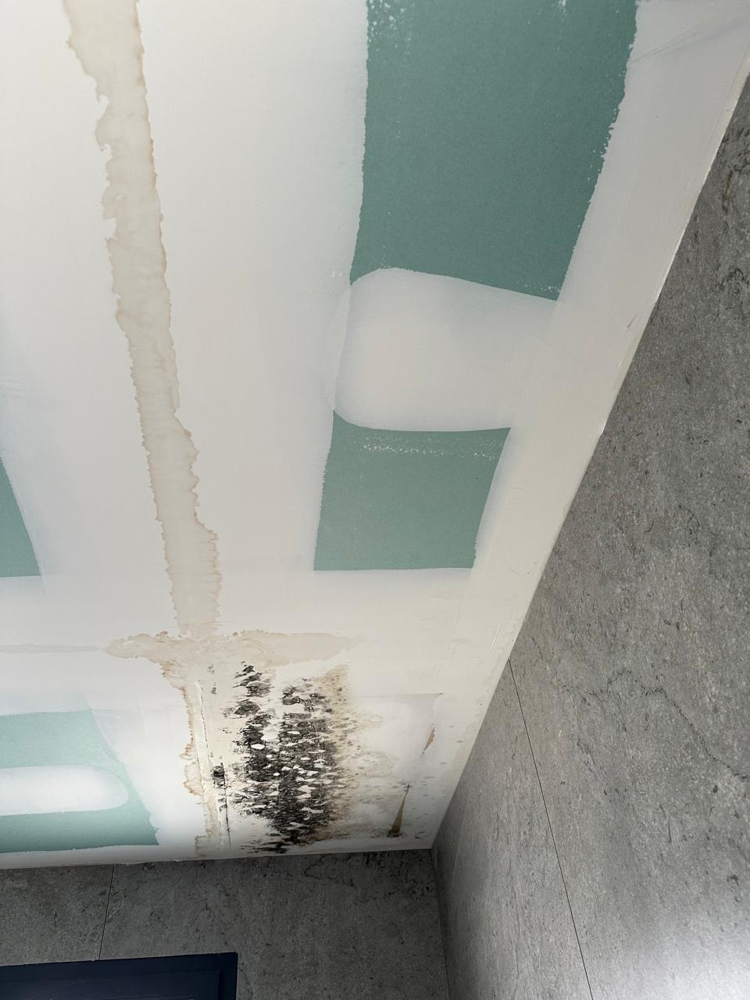

Un accompagnement réactif et rigoureux après sinistre
Un dégât des eaux laisse rapidement des auréoles tenaces, du plâtre qui cloque, des plaques de BA13 fragilisées, des moisissures ou des sols gondolés. Pour éviter que l’humidité ne dégrade durablement votre logement et pour faciliter votre indemnisation, il est essentiel de suivre des étapes techniques précises.
MULTISERVICES MONTPELLIER intervient rapidement à Montpellier, Nîmes et Béziers auprès des particuliers, locataires, propriétaires bailleurs et syndics pour chiffrer les travaux et exécuter une remise en état complète et propre.
Chiffrage détaillé pièce par pièce avec métrés précis, prêt à être transmis à votre assureur ou expert.
Vérification de l’assèchement des supports avant toute fermeture ou mise en peinture définitive.
Grattage des zones cloquées, traitement fongicide anti-moisissures et impression isolante anti-taches.
Remplacement du placo abîmé, bandes à joints, enduit, peinture murs/plafonds et réfection de sols.



Nos prestations après dégât des eaux
- Visite et devis détaillé sous 24h : document clair chiffrant dépose, assainissement, préparation et finitions.
- Traitement anti-moisissures et anti-auréoles : application de primaires bloquants pour empêcher les taches de ressortir.
- Reprise de plâtrerie et plaques de plâtre : remplacement de BA13 détrempé (y compris plaques hydrofuges en pièce d’eau) et bandes à joints.
- Réfection complète des peintures : remise en état uniforme des plafonds, murs et boiseries touchés.
- Remplacement des sols souples et parquets gonflés : dépose des lames endommagées et pose d’un sol neuf.
Pourquoi attendre le séchage complet avant de repeindre ?
Repeindre trop tôt sur un mur ou un plafond encore humide emprisonne l’eau dans le support : au bout de quelques semaines, la peinture cloque à nouveau et des moisissures réapparaissent.
Nous contrôlons systématiquement le support dès la visite technique afin de planifier le chantier au bon moment, appliquer un primaire isolant bloquant sur les anciennes traces d’eau et garantir un résultat durable.
Urgence sinistre : Appelez directement le 06 45 24 48 57 ou envoyez-nous les photos via notre page contact pour obtenir rapidement votre devis assurance.
Questions fréquentes
Votre devis est-il accepté par les compagnies d’assurance ?
Oui, nous rédigeons des devis détaillés indiquant les surfaces exactes, la nature des dégâts et chaque poste d’intervention (préparation, placo, peinture, sol) conformément aux attentes des assureurs.
Pouvez-vous intervenir uniquement dans la pièce touchée sans tout refaire ?
Oui, nous intervenons de façon ciblée sur les murs, plafonds ou sols sinistrés, en recherchant l’uniformité la plus nette possible avec l’existant.
Traitez-vous aussi les fissures ou cloques laissées par une ancienne fuite ?
Oui, nous grattons toutes les parties non adhérentes, traitons les fissures et appliquons un enduit de lissage avant la mise en peinture.